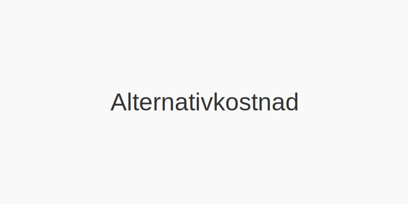
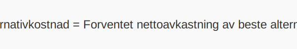

Alternativkostnad er verdien av beste alternative bruk av begrensede ressurser, og hjelper bedrifter med å forstå hva de gir avkall på når de velger én handling fremfor en annen. Dette konseptet er avgjørende for informerte beslutninger innen budsjettering, investering og generell ressursallokering.
For en komplett oversikt over kostnadstyper og kostnadskonsepter i regnskap, se Hva er kostnader?.

Definisjon av Alternativkostnad
Alternativkostnad er tapet av den nest beste muligheten når en ressurs brukes til ett formål i stedet for et annet. Ved å kvantifisere alternativkostnad kan bedrifter sammenligne ulike handlingsalternativer på en objektiv måte.
Typer kostnader
For å forstå alternativkostnad mer inngående, skiller man ofte mellom eksplisitte og implisitte kostnader:
| Type kostnad | Beskrivelse | Eksempel |
|---|---|---|
| Eksplisitt | Faktiske betalinger til eksterne parter | Lønn, leie |
| Implisitt | Tapte inntekter eller muligheter ved bruk av egne ressurser | Avkastning på egenkapital, egen arbeid |
For en dypere forståelse av kalkulatoriske kostnader, se Kalkulatoriske kostnader.
Hvorfor er Alternativkostnad viktig?
- Hjelper bedriften med beslutningsanalyse ved å sette alle alternativer på samme måleskala.
- Sikrer optimal ressursallokering og øker økonomisk effektivitet.
- Underbygger prognoser i budsjettering.
- Grunnlag for vurdering av investeringsprosjekter og prosjektrangering.
Praktiske eksempler
- Investering i maskiner vs. opplæring: Hvis bedriften kjøper nytt utstyr til kr 500 000, men mister muligheten til kurs for ansatte som ville gitt et estimert avkastning på 120 000 kr, er alternativkostnaden 120 000 kr.
- Egenkapitalbruk: Ved å bruke egenkapital på et prosjekt, gir man avkall på renteinntekter. En egenkapitalandel på 1 mill. kroner med forventet rente på 3 % har en implisitt alternativkostnad på 30 000 kr per år.
| Scenario | Alternativkostnad |
|---|---|
| Kjøp av maskin (tapte kursinntekter) | 120 000 kr |
| Egenkapitalinvestering (3 % rente) | 30 000 kr per år |
Oppsummering
- For mer om lønnsomhetsanalyse, se Dekningsbidrag.
Alternativkostnad gir en strukturert metode for å vurdere hva man ofrer ved ulike økonomiske beslutninger. Ved å inkludere alternativkostnad i analyser og rapporter sikrer man mer presise beslutningsgrunnlag og bedre ressursutnyttelse.
Hvordan beregne Alternativkostnad
Beregn alternativkostnad ved å identifisere den beste alternative bruken av ressursen og estimere den forventede avkastningen som ofres:
- Identifiser alternativet med høyest forventet avkastning.
- Beregn den forventede nettoavkastningen fra det beste alternativet.
- Alternativkostnad = Forventet nettoavkastning av beste alternativ.

Vanlige utfordringer og fallgruver
- Estimeringsusikkerhet: Det kan være vanskelig å nøyaktig forutsi avkastningen til alternative investeringer.
- Skjulte kostnader: Ikke alle implisitte kostnader er like åpenbare (f.eks. tap av fleksibilitet eller tidsbruk).
- Kompleksitet i sammenligninger: Når alternativer har ulik risiko eller tidshorisont, kan direkte sammenligninger være utfordrende.
Alternativkostnad i budsjettering og investeringsanalyse
Ved budsjettering bidrar alternativkostnad til å sikre at ressursene fordeles til prosjekter med høyest forventet avkastning. Se også Budsjettering.
I investeringsanalyse hjelper alternativkostnad med å rangere prosjekter etter opportunitetskostnader, sammen med metoder som Inntjeningsbasert Verdivurdering.